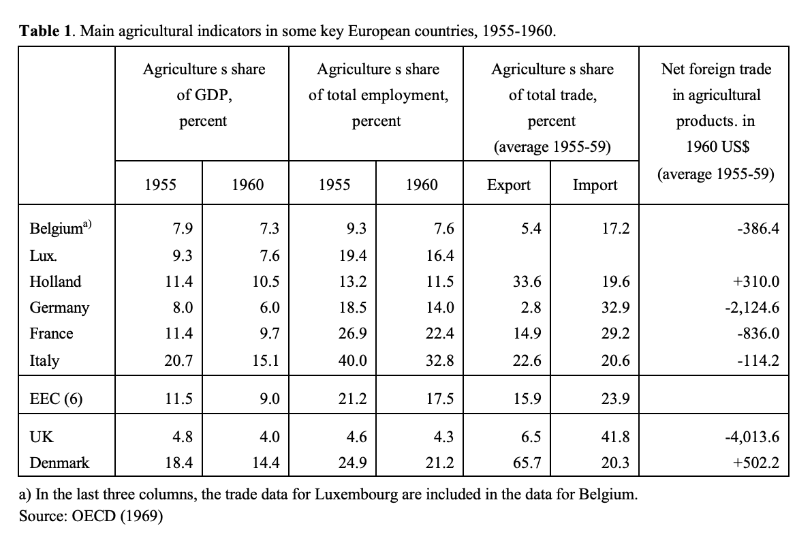

ClimatRealismNetZeroEU-Tooze
Created Wednesday 24 March 2021 (21-03-24_14-35-54)
@2021 @blog_post
Tooze, Adam (2021). Realism & Net-Zero: The EU Case (Chartbook Newsletter #17). https://adamtooze.substack.com/p/chartbook-newsletter-17 , accessed 24.3.2021.
Chartbook Newsletter #17
Realism & Net-Zero: The EU Case
Adam Tooze
Mar 23
Source: McKinsey
How should progressive politics relate to realism?
The question has long haunted me. It was most pressing when I was writing Deluge and struggling with the problems of interwar war international relations and the Treaty of Versailles. It was out of that era that conventional notions of “realism” in international relations theory were born.
Back in 2017, Stefan Eich and I had a crack at dismantling “Politics as a Vocation”, a key lecture by Max Weber that is often cited as canonical for realism in political theory.
Right now there is no more important arena in which to debate this issue than the climate crisis.
What does it mean to face up realistically to the challenge of climate change? Under present conditions, what is it realistic to hope for? Not the least mind-blowing thing about climate politics is that we are forced to rely on scientifically founded speculation about the long-distance future. That makes it particularly interesting as a domain for talking about realism.
Last week I found myself debating climate politics and realism on the Talking Politics podcast with Helen Thompson and David Runciman. Our jumping off point was a fascinating new Engelsberg essay by Helen in which, in tones redolent of classic realism, she urges us to face the tough challenges ahead. Indeed at one point - in connection with China - she speaks of tragedy.
There is no doubt, of course, that achieving net zero involves an epic technological shift. It is historically unprecedented. But how tough are the social and economic trade-offs that it will impose?
A lot of drama surrounds this question. Is it really warranted?
In my latest column for the Social Europe website I decided to try to answer that question for the EU. Obviously, this is a limited case and by no means a hard one and my remarks are not intended to be in any way conclusive. My question is “meta”. What is the mood (Stimmung) on this issue at the EU Commission and McKinsey the leading management consultants. What does realism mean for them on the climate issue? 2020:ClimatNetZeroEurope-McKinsey
I chose those two points of reference because the Commission is in charge of formulating the EU’s Green Deal Agenda and McKinsey is one of the privileged vantage points from which to observe the hive mind of global capital.
The following is an annotated and lightly amended version of the Social Europe column. The original is here. Thanks to Robin Wilson for the great edits.
“Europe’s decarbonisation challenge? Wir schaffen das (We can do it! Angela Merkel’s famous slogan when facing the refugee crisis in 2015)
Roadmaps to net-zero by 2050. Is a just transition for Europe realistic?
In the 18th century, Europe was the cradle of the fossil-fuel revolution. Now, we are calling time on the energy sources which have hitherto defined modern history. If we achieve net-zero carbon-dioxide emissions by 2050, it will be a remarkable achievement. If we do not, we have reason to believe that the basic conditions of our existence will be in question. Even in the best case, stabilising with 1.5-2C degrees of warming, the world will be a much more dangerous and unpredictable place.
The stakes are huge and so far we have made precious little progress.
Clearly we need to dramatically accelerate the rate of decarbonization. But how big will the impact be on society and economy?
In hard times, realism all too easily shades into pessimism. (The gesture here is towards the Weber essay) Reasonable evaluation of worst-case scenarios gives rise to gothic imagining of catastrophe. We are, after all, setting ourselves to convert a civilisation based on dense energy to rely instead on the power of the wind and the sun.
(Helen in our discussion referenced the indispensable work of Vaclav Smil on this theme)
In the midst of such a transformation, how do we decide what is realistic and what not? (I find the search for orientation in the midst of historic transformation endlessly fascinating. This is one of the things that captivates me about the history of statistics.)
Clearly the energy transition is fundamental and far-reaching, but how much will it cost? How much change will it require in the way Europeans live and work? How large is the challenge of managing a just transition?
Generating scenarios
Since the first efforts of the 1970s, environmental scientists, engineers and economists have been constructing huge models with which to peer into the future. To call them a reality check would be misleading. The simulations are full of assumptions and hypotheticals. They are best thought of as scenario generators. As uncertain as they may be, there is nothing better on which to base policy.
The last in-depth and comprehensive analysis of the pathway to European decarbonisation published by the experts of the European Commission dates to November 2018. (I hope this is true. It is the latest in depth report linked on the Commission’s webpage on the 2050 pledges).
In hundreds of pages of highly technical analysis it maps what would be involved in achieving 40 per cent emission cuts by 2030 and 80 per cent by 2050. Anticipating the move to greater ambition agreed in 2020, the commission's modelers also included scenarios to achieve net-zero by 2050.
In December 2020 an even more up-to-date report on Europe's pathways to net-zero was published by McKinsey's, the world's leading management consultancy.
(The cheerful Greta graphic are a bit cheeky are they not?)
Both exercises involved projecting a benchmark scenario and then trying to work out what would need to change for the paths of emissions to be bent downwards to zero by 2050. The models differ in detail but they agree in their broad conclusions.
Ambitious by feasible
Decarbonisation by 2050 is ambitious but feasible. According to McKinsey, almost three-quarters of the emissions reductions we need to attain by 2030—73 per cent to be precise—can be achieved with technologies which are either mature or in the stage of early adoption, such as electric vehicles. Only 5 per cent of the cuts necessary rely on technologies still on the drawing board. Even if we look as far out as 2050, 87 per cent of the necessary reductions can be achieved with technologies which are already in use or have, at least, been demonstrated on a small scale. That leaves 14 per cent to be covered by blue-sky innovation.
Source: McKinsey
The cost of deploying all this technology is huge. McKinsey estimates a bill of €28 trillion over the period 2020-50. The commission's most ambitious scenario envisions spending €28.4 trillion between 2031 and 2050. Trillions need to be poured into the power system—for solar panels, wind farms, batteries and the electricity grid. But vast sums also need to go into modernising buildings, into industry and agriculture and, above all, into transport.
Numbers in the tens of trillions engender awe. Setting them against gross domestic product brings them down to earth. Total GDP of the EU27 in 2019 was shy of €14 trillion. Overall investment runs to about 22 per cent of GDP. McKinsey suggests that, to achieve net zero by 2050, the EU needs to invest every year about 5.8 per cent of GDP in the energy transition. That is substantial, but most of it is not new money. As Joerg Haas has argued, overcoming our addiction to fossil fuels implies stamping on the brake at the same time as hitting the accelerator.
Reallocating trillions flowing into fossil fuel-intensive sectors will cover four-fifths of the required investment in a clean future. The incremental additional investment needed is some €5.4 trillion over 30 years—between 1 and 1.5 per cent of GDP. This closely matches the commission's estimate. As it happens, 1.2 GDP is what the EU27 spent on their militaries. France and Poland managed over 1.5 of GDP. It is a lot of money but by no means beyond reach.
Net-zero at zero net cost?
The big question is thus not how to mobilise the new money but how to ensure investment happening anyway flows in the right direction. McKinsey trumpets the conclusion that the overall cost to the EU of achieving net-zero by 2050 will be zero: energy savings will cover the costs of the investment. This is great news.
But, as McKinsey knows only too well, that is not how trillions of investment are normally justified. They have to produce an adequate rate of return—opportunity cost is the measure that matters. It is a matter not of physical contraints but of political economy and on that score the news is less good.
According to McKinsey, between now and 2050, almost half the necessary investment will not meet standard investment criteria. Up to 2030, due to the high cost of renewable technologies in their early stages, less than 40 per cent will be justifiable on commercial grounds. In industry and buildings, two sectors where emissions are hard to abate, a tiny fraction of the necessary investment will generate an adequate profit.
If McKinsey says this it is worth listening because they may very well be setting the terms.
(This for me is a very important point. I am afraid that folks will read this piece as some kind of uncritical endorsement of McKinsey’s expertise, whereas what I am trying to get at is how we define reality and the options it opens for us. That is obviously a power political process. Viewed from this perspective I mean this point literally. Defining what is a reasonable profit is part of what McKinsey does. No one is more powerful than them. This report can therefore be read as performative. They are telling us what capital “needs”.)
It is in closing the gap between the investment that McKinsey has defined as necessary and that which it has defined as justifiable from a business point of view that government comes in.
If the gap were to be closed by public expenditure, Europe's governments would, according to McKinsey, need to mobilise €4.9 trillion in subsidies over 30 years. That is the amount of profit taxpayers would need to offer investors to get them interested in the energy transition—€365 for every man, woman and child in the EU27, every year for 30 years. Painful and unfair, no doubt, but hardly inconceivable.
In any case, the public purse is only one way of driving business investment. An alternative is to use carbon pricing. McKinsey estimates that with a carbon price of €100 per ton 80 per cent of the necessary investment could be justified on commercial grounds. The funds generated from an emissions-trading system could then be recycled in subsidies and other promotional spending. In hard-to-abate sectors, direct interventions would remain indispensable.
(Important new papers on carbon pricing include this one by Mathes for Boell and several papers out of Bruegel)
Hardly impossible
This, then, is one measure of the challenge facing the European Union and its member states. Currently, the EU's regular budget is capped at 1 per cent of GDP. The supplemental NextGenerationEU programme is a step in the right direction, but the €32 billion per annum it allocates to climate spending over the next seven years is far too small. Scaling up would be a stretch but hardly impossible to imagine, especially if spending by Brussels is supplemented by national resources and lending by policy-oriented banks such as the European Investment Bank.
Of course, one should not underestimate the scale of a challenge even of these proportions. We know from bitter experience what outsized leverage even tiny interest groups can exercise over EU policy. The influence of the French farm lobby is the stuff of legend. The grip of fossil fuels over our way of life goes deep. Indeed, it is often argued that this is what makes the energy transition so intractable: it touches everyone.
Yet all the more striking is that, in charting the path to net-zero, neither the commission nor McKinsey presumes radical changes in lifestyle on the part of the European population. Less traveling and more sensible use of energy at home could help. So too could a shift away from meat-eating. Any one of those changes would swing the balance a percentage point here or there. According to McKinsey's model, a suite of behavioural changes could reduce EU emissions by 15 per cent, substantially helping to close the gap as far as the hardest to abate sectors are concerned. But the basic change has to happen in infrastructure.
Takeaway: STOP EATING MEAT!
The comprehensive shift in the energy system will change the appearance of Europe, as the fossil-fuel revolution did in earlier generations. Wind farms, solar panels and transmission lines will stud the landscape. Repurposing land use is a key factor in achieving net-zero. Once again, however, it is easy to exaggerate. All the necessary land for solar and wind farms—between 1.5 and 3 per cent of the EU's landmass—can be gained by reusing what is classified as unused or waste land. There is no need to infringe on nature reserve and forests. Agricultural land use will likely shrink due to improvements in efficiency in food use.
Energy transition
These, of course, are aggregate statements. As the experience of the last few decades has made abundantly clear, the energy transition will have to be won, community by community, across the continent. To soften the trade offs, Europe may choose to import some green energy from abroad. One of the shocks of the energy transition will be that for the first time since the advent of the hydrocarbon era Europe will be largely self-sufficient in energy. Europe's neighbours in north Africa are obvious clean energy partners. As this recent Bruegel report spells out, geopolitics alone will dictate the need to find replacements for oil and gas imports. Otherwise, an 80 percent cut in fossil fuel imports will deal a devastating blow to the economies of Algeria and other strategically vital neighbors.
In light of the funding models for clean energy used to date, talk of the energy transition often awakens fears of huge electricity bills for households. The modelling exercises however offer significant reassurance on this front. Both the commission and McKinsey anticipate a modest increase in energy bills to 2030 but the impact is much less severe than the step-up experienced since 2000.
After 2030 all modeling scenarios suggest falling energy costs, as households become more efficient. By 2050 European families should be spending significantly less on energy. Low-income households, which currently pay disproportionate utility bills, will have most to gain.
A further key concern of the just transition is jobs. Huge shifts are already afoot in the motor-vehicle industry. In Germany the remaining coalmining communities extracted a large transition package. The Polish government remains a vociferous lobbyist on behalf of its coal industry. But how big is the problem? Both modelling exercises predict that a carbon-neutral economy by 2050 will offer more jobs than the fossil-fuel-addicted status quo. Job losses in industry and fossil energies will be more than offset by gains in energy efficiency, upgrades to buildings, renewables and transmission.
The problem lies in the regional disparities. The hardest case may be Poland with its heavy reliance on coal. But even there McKinsey estimates that the net effect will be positive, adding several hundred thousand new jobs.
Poland’s Baltic coastline offers great opportunities for offshore wind development.
Source: McKinsey
Clear message
Of course, these forecasts may turn out to be unrealistic. It would not be the first time in history that experts underestimated a giant challenge – think of the utopian assumptions about nuclear power, or countless agricultural improvement schemes around the world. The adjustment may be more violent. Perhaps we will run into bottlenecks driving costs upwards. Necessary innovations may fail to materialise. But if the scenarios are only half right, the message is clear. Decarbonization may be a mind-boggling technical proposition, but the collective mobilization required is not remotely on the scale of the wartime emergencies 2020:MobilLessonsWW2-Mason or social revolutions 2020:MobilChronicEmergency-Malm to which it is sometimes compared. Nor will it be as transformative of everyday life in Europe as the huge shift out of agriculture which took place after 1945—not for nothing did the Common Agricultural Policy in the late 1970s account for almost 90 per cent of EU spending.

Source: Zobbe 2001
As recently as 1955, 40 percent of Italian employment was in agriculture. Today the share is 3.61 percent. The employment impact of the energy transition should be far less painful than that of deindustrialisation in the 1970s and 1980s, let alone the existential shock suffered by the east-European EU members in the 1990s. On that score, however, the scenario planning by both the commission and McKinsey includes a hidden warning.
If one projects the European labour market to 2050, the specific shift in employment and skills required by the climate crisis pale by comparison with the churning transformations imposed by the "baseline scenario" of global capitalism. As McKinsey remarks en passant, reaching net-zero may require 18 million workers to be reskilled by 2050 but this is small beer by comparison with the 100 million it expects to need retraining already by 2030, on account of what it euphemistically refers to as "automation". index:ECONOMICS:Automation
The political and economic challenges ahead are no doubt huge. On a global scale, they are even more so. But investing in the clean energy transition and green modernisation may turn out to be one arena in which Europe can, in fact, offer its citizens a dynamic and promising future.
5
6
← Previous
false
Camiel Coenen21 hr ago
Perhaps you should read Vaclav Smil's book 'Power Density' more closely. Power density is key in any energy transition and it is clear that there is an important role for nuclear energy in the future, the densest power source of them all. It seems to be willfully ignored in this article (and perhaps also in the McKinsey and EU commission reports). Banking on a very dense power source like nuclear energy is a superior strategy to banking on blue-sky innovations somewhere in the future ("That leaves 14 per cent to be covered by blue-sky innovation". Pie in the sky?). Just a single sentence has been dedicated to nuclear: "utopian assumptions about nuclear power". There's nothing utopian about it, it just simple physics (energy density) and a G7 country has proven over many decades now, that it works: France, which pretty much achieved the transition to an almost carbon-free electricity system approximately 20 years ago.
3Reply
2 replies
false
Richard Weinberg20 hr ago
I'm writing as a scientist. I'm not a climate scientist, so my specialized knowledge is limited, but I grew up around true experts, and have tried to stay informed.
Greenhouse gases are a real problem, and a solution is necessary. However the specific claims of expert panels are rhetorically excessive. Climate is exceedingly complex, and confident projections 50+ years into the future are fraught with uncertainty. To proceed with great caution in the face of possible severe danger is wise, but to promulgate educated guesses as "known facts" may ultimately simply discredit expertise. Thus, in my view, "If we do not [achieve net-zero carbon-dioxide emissions by 2050], we have reason to believe that the basic conditions of our existence will be in question" is perhaps true, provided one recognizes the weasel-word phrasing of "will be in question," but to me seems misleading.
Additionally, I echo the views of Camiel below: one wonders why e.g. nuclear energy is ignored in facing this problem. My own suspicion is that it reflects that sad tribal politicization of nearly everything now, such that cultural coherency becomes more important than solving problems, no matter how serious they may be.
2Reply
4 more comments…
See all
Ready for more?
© 2021 Adam Tooze. See privacy, terms and information collection notice
Publish on Substack
This site uses cookies. To find out more, read our privacy policy ✖ Close
Backlinks: index:CLIMATE:Progress index:ECONOMICS:Automation